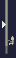
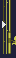

เลือกเหยื่อและคันเบ็ดจากข้อมูล ROM — ตกปลาทาโร่ 2
สรุปสิ่งที่ผู้เล่นเอาไปใช้ได้: ควรพกลัวร์อะไร ซื้อคันไหน และต้องเติม HP ก่อนตกเมื่อไร
เริ่มต้นด้วยชุดนี้
ทุกคู่ในตารางครอบคลุมเงื่อนไขลัวร์ของปลาและสัตว์น้ำครบ 38 โปรไฟล์ ที่มีลัวร์อย่างน้อยหนึ่งชนิดผ่านการตรวจในโค้ด เลือกคู่ที่มีขายในด่านของคุณ นี่คือความเข้ากันได้ตามโค้ด ไม่ใช่อัตรากินเหยื่อหรือการรับประกันจับได้
ลัวร์คู่นี้ไม่ได้ครอบคลุมปลาทุกชนิด ค้นหาปลาเป้าหมายในหน้าแผนที่ แล้วเปิดข้อมูลปลาเพื่อดูเหยื่อจริงหรือฟลายที่ผ่านเงื่อนไขของมัน ค้นหาปลาและดูเหยื่อที่ใช้ได้ ↗
| ด่าน | ซื้อหรือพก |
|---|---|
| 1 | 2E + 23 · ¥55 |
| 2–3 | 17 + 24 · ¥55 |
| 4 | 17 + 23 · ¥50 |
| 5–6 | ไม่มีคู่ครบขายในพื้นที่ ให้พกคู่ที่มีหรือซื้อ 17 + 23 ที่ด่าน 4 |
แล้วคันไหนควรซื้อ?
เลือกตามวิธีตกและสิ่งที่อยากให้ดีขึ้น: เวลาขยับช่องเป้าก่อนเกมตรวจจุดตก หรือระยะเผื่อก่อนเส้นทางหนีเฉพาะที่ทำให้อุปกรณ์หาย ค่าเหล่านี้ไม่ได้บอกโอกาสปลากินหรือจับขึ้นฝั่ง
ทิปก่อนตกแบบคันเหวี่ยงหรือคันลัวร์: เติม HP ให้ถึง 100 ก่อนตกถ้าทำได้:
คันเหวี่ยงและคันลัวร์มีเวลาปรับช่องเป้าสั้นลงเมื่อ HP ต่ำกว่า 100
ผลที่ยืนยันได้คือคืนเวลาสำหรับเล็ง ยังใช้ยืนยันโบนัสอัตรากินเหยื่อหรือพลังจับปลาไม่ได้
สายทุ่น / ปลาอายุ
คันอายุคาร์บอน 10m ·
14
¥1500
ถ้าอยากได้เวลาปรับเป้านานที่สุดในกลุ่มนี้ เลือกคันนี้ ราคาเท่าคันอายุรุ่นเดิม ID 07 แต่ค่าที่ ROM ใช้กับเวลาปรับเป้าและขอบเขตก่อนเส้นทางเสียอุปกรณ์สูงกว่า
คันคาร์ป 5m ·
08
¥1500
พื้นที่ 5 (ร้านคันเบ็ดพิเศษ)
ถ้าเป้าหมายคือเพิ่มระยะเผื่อก่อนเส้นทางเสียเบ็ดเฉพาะนี้ คันปลาคาร์ปเป็นหนึ่งในคันที่ถึงขอบเขตสูงสุดของกลุ่ม
คันเฮระคาร์บอน 6.5m ·
15
¥2000
คันนี้มีขอบเขตสูงสุดแบบเดียวกับ ID 08 และให้เวลาปรับเป้ามากกว่า แต่ราคาแพงกว่า ¥500
สายเหวี่ยง

คันหวดสองมือ ·
10
¥1500
พื้นที่ 6 (ร้านคันเบ็ดพิเศษ)
ถ้าต้องการเวลาปรับเป้าและขอบเขตก่อนเส้นทางเสียอุปกรณ์สูงสุดในกลุ่ม เลือกคันสองมือ; การเทียบนี้ไม่พิสูจน์ว่าจับปลาได้มากขึ้น
สายลัวร์

คันลัวร์ปลาใหญ่ ·
0D
¥650
พื้นที่ 4 (ร้านคันเบ็ดพิเศษ)
ตัวเลือกที่มีเวลาปรับเป้าและขอบเขตก่อนเส้นทางเสียอุปกรณ์สูงสุดในกลุ่ม แพงกว่าคันลัวร์ใหญ่ ID 0C แค่ ¥50; ถ้าซื้อเพื่อสองประโยชน์นี้ ราคาเพิ่มมีเหตุผลจากค่าที่แกะได้ แต่ยังไม่พิสูจน์ว่าเพิ่มโอกาสจับปลา; ถ้ามี 0C แล้ว ซื้อ 0D ต้องจ่ายเต็ม ¥650
สายฟลาย
คันฟลายใหญ่ ·
13
¥450
ให้เวลาปรับเป้าและขอบเขตก่อนเส้นทางเสียอุปกรณ์สูงสุดในกลุ่ม แพงกว่ารุ่นกลาง ID 12 แค่ ¥50 เมื่ออยากได้สองค่านี้ นี่คือตัวเลือกตามหลักฐาน ROM ไม่ใช่อันดับจับสำเร็จ; ถ้ามีคันกลางแล้ว ต้องจ่ายราคาเต็ม ¥450 ไม่ใช่ส่วนต่าง ¥50
หลักฐานเทคนิคและตารางเต็ม
ส่วนนี้เก็บตารางและรายละเอียดที่ใช้ตรวจสอบข้อสรุป ตัวเลขตัวนับภายใน ROM ไม่ใช่วินาที เมตร หรือคะแนนจับปลา
ตัวกรองของฟลาย
บอดี้ฟลายธรรมดา 64 ID ถูกแปลงเป็นเหยื่อ 3 ID แต่มี mask เพียง 2 กลุ่ม: 0020 ผ่าน mask ของ 33 โปรไฟล์ และ 0004 ผ่าน 17 โปรไฟล์ซึ่งอยู่ในกลุ่ม 33 อยู่แล้ว บอดี้กลุ่ม 0020 คือ 01–08 / 2B–33 / 4B–4F / 60–65; ปีกกับหางไม่เปลี่ยน mask ของบอดี้ เงื่อนไขเสริมจะปิดทางติดเบ็ดเมื่อ (BODY ID AND 3) ตรงกับ 7F:1E86 หรือ (WING ID AND 3) ตรงกับ 7F:1E88; ตัวกรองนี้ไม่อ่านหาง จึงยังยืนยันไม่ได้ว่าฟลายชิ้นเดียวครอบคลุมทุกตัวหรือมีอัตรากินสูงกว่า
คันเบ็ด: สิ่งที่ค่าวัตถุดิบใช้ทำจริง
ค่า +2 เป็นขีดจำกัดตัวนับของช่วงเล็ง: ระหว่างกดปุ่มทิศทาง เป้าจะขยับ; ปล่อยปุ่มตกปลาหรือครบขีดจำกัดแล้วเกมตรวจช่องนั้น ค่า +3 กลายเป็นขอบเขตตำแหน่งปลาในเส้นทางเสียเบ็ด/ลัวร์/ฟลายเฉพาะทางหนึ่งเท่านั้น ค่าสูงขึ้นทำให้ปลาไปได้ไกลขึ้นก่อนเข้าเส้นทางนี้ แต่เส้นทางหนีอื่นยังมีอยู่ ค่า +7 เปลี่ยนสถานะเริ่มสู้ปลา คำอธิบายนี้ไม่ใช่คะแนนจับสำเร็จ
ลัวร์ที่มีแขนงตอบสนองต่อปลาบางชนิด
ID 12 ตรวจ Black bass, ID 21 ตรวจ Namazu, ID 51 ตรวจ Akame; เมื่อ ID ตรง เกมหารค่าตอบสนองเริ่มต้นลงครึ่งหนึ่งและข้ามการปรับตามขนาดในแขนงของลัวร์นั้น คันยังปรับค่าต่อภายหลัง โค้ดไม่ได้ยืนยันว่าปลากินง่ายขึ้นหรือตกขึ้นง่ายขึ้น
ตารางระเบียนคันเบ็ดทั้งหมด
| รูปแบบ | ID / ชื่อ | ราคา | ร้านที่ตรวจพบ | +2 เวลาค้างเล็ง | +3 ขอบเขต ×336 | ID ปลาเฉพาะ | แขนงตอบสนอง | ออฟเซ็ต | ไบต์ดิบ |
|---|---|---|---|---|---|---|---|---|---|
| ทุ่น / อายุ | 01 คันทานาโกะ 2m | ¥500 | พื้นที่ 5 (ร้านคันเบ็ดพิเศษ) | 10 | 3 × 336 = 1008 | 57 | 0 | 0x02A7F5 | 01 00 0A 03 39 00 08 00 51 A9 F4 01 |
| ทุ่น / อายุ | 02 คันคาร์บอนลำธาร 6m | ¥500 | ไม่พบรายการขายในข้อมูลร้านหกพื้นที่ | 60 | 8 × 336 = 2688 | 1 | 1 | 0x02A801 | 01 02 3C 08 01 09 0E 01 5F A9 F4 01 |
| ทุ่น / อายุ | 03 คันยามาเบะ 3.9m | ¥350 | พื้นที่ 1, 2, 4 และ 6 | 30 | 5 × 336 = 1680 | 0 | 1 | 0x02A80D | 01 00 1E 05 00 06 08 01 6C A9 5E 01 |
| ทุ่น / อายุ | 04 คันคาร์บอนน้ำใส 5.3m | ¥500 | พื้นที่ 1, 2, 3, 5 และ 6 | 50 | 7 × 336 = 2352 | 0 | 1 | 0x02A819 | 01 02 32 07 00 0A 0E 01 7B A9 F4 01 |
| ทุ่น / อายุ | 05 คันยามาเมะ 4.5m | ¥750 | พื้นที่ 1 และ 2 | 40 | 6 × 336 = 2016 | 3 | 1 | 0x02A825 | 01 00 28 06 03 02 08 01 8A A9 EE 02 |
| ทุ่น / อายุ | 06 คันมาบุนะ 3.3 ม. | ¥100 | ไม่พบรายการขายในข้อมูลร้านหกพื้นที่ | 20 | 4 × 336 = 1344 | 29 | 0 | 0x02A831 | 01 00 14 04 1D 03 08 00 99 A9 64 00 |
| ทุ่น / อายุ | 07 คันอายุ 7m | ¥1500 | พื้นที่ 3 และ 5 | 70 | 9 × 336 = 3024 | 56 | 1 | 0x02A83D | 01 00 46 09 38 01 08 01 A8 A9 DC 05 |
| ทุ่น / อายุ | 08 คันคาร์ป 5m | ¥1500 | พื้นที่ 5 (ร้านคันเบ็ดพิเศษ) | 40 | 24 × 336 = 8064 | 13 | 2 | 0x02A849 | 01 00 28 18 0D 05 08 02 B4 A9 DC 05 |
| ทุ่น / อายุ | 09 คันเฮระ 3m | ¥200 | พื้นที่ 4 และ 5 | 30 | 12 × 336 = 4032 | 37 | 1 | 0x02A855 | 01 00 1E 0C 25 04 08 01 C0 A9 C8 00 |
| ลัวร์ | 0A คันลัวร์เล็ก | ¥500 | พื้นที่ 1, 2, 3, 5 และ 6 | 70 | 15 × 336 = 5040 | 0 | 0 | 0x02A861 | 04 02 46 0F 00 0F 08 00 CC A9 F4 01 |
| ลัวร์ | 0B คันลัวร์กลาง | ¥550 | ไม่พบรายการขายในข้อมูลร้านหกพื้นที่ | 80 | 18 × 336 = 6048 | 0 | 0 | 0x02A86D | 04 02 50 12 00 10 08 00 D5 A9 26 02 |
| ลัวร์ | 0C คันลัวร์ใหญ่ | ¥600 | พื้นที่ 1, 2, 3, 4 และ 6 | 100 | 21 × 336 = 7056 | 0 | 1 | 0x02A879 | 04 02 64 15 00 11 08 01 DE A9 58 02 |
| ลัวร์ | 0D คันลัวร์ปลาใหญ่ | ¥650 | พื้นที่ 4 (ร้านคันเบ็ดพิเศษ) | 120 | 24 × 336 = 8064 | 38 | 2 | 0x02A885 | 04 02 78 18 26 12 08 02 E7 A9 8A 02 |
| เหวี่ยง | 0E คันหวดเล็ก | ¥250 | พื้นที่ 1, 3, 4, 5 และ 6 | 70 | 18 × 336 = 6048 | 0 | 0 | 0x02A891 | 02 02 46 12 00 13 0E 00 F4 A9 FA 00 |
| เหวี่ยง | 0F คันหวดกลาง | ¥600 | พื้นที่ 2, 4, 5 และ 6 | 100 | 21 × 336 = 7056 | 0 | 1 | 0x02A89D | 02 02 64 15 00 14 0E 01 FC A9 58 02 |
| เหวี่ยง | 10 คันหวดสองมือ | ¥1500 | พื้นที่ 6 (ร้านคันเบ็ดพิเศษ) | 120 | 24 × 336 = 8064 | 55 | 2 | 0x02A8A9 | 02 02 78 18 37 07 0E 02 04 AA DC 05 |
| ฟลาย | 11 คันฟลายเล็ก | ¥350 | ไม่พบรายการขายในข้อมูลร้านหกพื้นที่ | 50 | 15 × 336 = 5040 | 0 | 0 | 0x02A8B5 | 08 02 32 0F 00 0C 08 00 0E AA 5E 01 |
| ฟลาย | 12 คันฟลายกลาง | ¥400 | พื้นที่ 1, 2, 3 และ 5 | 60 | 18 × 336 = 6048 | 0 | 1 | 0x02A8C1 | 08 02 3C 12 00 0D 08 01 17 AA 90 01 |
| ฟลาย | 13 คันฟลายใหญ่ | ¥450 | พื้นที่ 1, 2, 3 และ 4 | 70 | 21 × 336 = 7056 | 0 | 2 | 0x02A8CD | 08 02 46 15 00 0E 08 02 20 AA C2 01 |
| ทุ่น / อายุ | 14 คันอายุคาร์บอน 10m | ¥1500 | พื้นที่ 3, 4 และ 6 | 80 | 15 × 336 = 5040 | 56 | 1 | 0x02A8D9 | 01 02 50 0F 38 08 0E 01 29 AA DC 05 |
| ทุ่น / อายุ | 15 คันเฮระคาร์บอน 6.5m | ¥2000 | พื้นที่ 4, 5 และ 6 | 60 | 24 × 336 = 8064 | 37 | 1 | 0x02A8E5 | 01 02 3C 18 25 0B 0E 01 35 AA D0 07 |
การผ่านเงื่อนไขรายโปรไฟล์
✓ หมายถึงผ่านเฉพาะการตรวจ mask ของเหยื่อคอลัมน์นั้น; — หมายถึงไม่ผ่าน ชื่อญี่ปุ่นถอดจากข้อความ ROM ค้นหาได้ด้วยชื่อที่แสดง คำอ่านโรมัน หรือคำช่วยค้นหาภาษาไทยในโปรเจกต์ คำช่วยค้นหาเหล่านี้ไม่ใช่ข้อความใน ROM และไม่ใช้ยืนยันผลการเล่น
| ID / ชื่อใน ROM | 17 / 18 2E–31 |
23 / 24 | 0400 73 IDs |
Fly 0020 |
Fly 0004 |
|---|---|---|---|---|---|
01 イワナ | ✓ | ✓ | ✓ | ✓ | ✓ |
02 アメマス | ✓ | ✓ | ✓ | ✓ | ✓ |
03 ヤマメ | ✓ | ✓ | ✓ | ✓ | ✓ |
04 アマゴ | ✓ | ✓ | ✓ | ✓ | ✓ |
05 カジカ | ✓ | ✓ | — | ✓ | — |
06 ニジマス | ✓ | ✓ | ✓ | ✓ | — |
07 ヒメマス | ✓ | ✓ | ✓ | — | — |
08 ブラウントラウト | ✓ | — | ✓ | ✓ | — |
09 カワマス | ✓ | ✓ | ✓ | ✓ | ✓ |
0A ワカサギ | — | — | — | — | — |
0B ブラックバス | ✓ | ✓ | ✓ | ✓ | ✓ |
0C ウグイ | ✓ | ✓ | ✓ | ✓ | ✓ |
0D コイ | — | ✓ | — | — | — |
0E ドンコ | ✓ | — | — | ✓ | — |
0F オイカワ | — | ✓ | — | ✓ | ✓ |
10 モツゴ | — | — | — | — | — |
11 イトモロコ | — | — | — | ✓ | — |
12 ギギ | ✓ | — | — | ✓ | — |
13 サクラマス | ✓ | ✓ | ✓ | ✓ | ✓ |
14 コクレン | ✓ | — | — | — | — |
15 ハクレン | — | — | — | — | — |
16 ムギツク | — | — | — | ✓ | — |
17 ホンモロコ | — | — | — | — | — |
18 ヤマノカミ | ✓ | — | — | ✓ | — |
19 ドジョウ | — | — | — | — | — |
1A タモロコ | — | — | — | — | — |
1B カワムツ | — | — | — | ✓ | — |
1C キンブナ | — | — | — | — | — |
1D マブナ | — | — | — | — | — |
1E アカザ | — | — | — | ✓ | — |
1F メダカ | — | — | — | — | — |
20 ブルーギル | ✓ | — | ✓ | ✓ | ✓ |
21 オヤニラミ | ✓ | — | — | ✓ | ✓ |
22 ハリヨ | — | — | — | ✓ | — |
23 トミヨ | — | — | — | — | — |
24 ライギョ | ✓ | — | ✓ | — | — |
25 ヘラブナ | — | — | — | — | — |
26 ナマズ | ✓ | ✓ | ✓ | — | — |
27 サヨリ | — | — | — | — | — |
28 ハス | ✓ | ✓ | ✓ | — | — |
29 ワタカ | — | — | — | — | — |
2A カマツカ | — | — | — | ✓ | — |
2B ツチフキ | — | — | — | ✓ | — |
2C シマドジョウ | — | — | — | — | — |
2D カムルチー | ✓ | ✓ | ✓ | — | — |
2E ヒガイ | — | — | — | ✓ | — |
2F ソウギョ | — | — | — | — | — |
30 アオウオ | — | — | — | ✓ | — |
31 ニゴイ | ✓ | — | ✓ | ✓ | ✓ |
32 メゴチ | — | — | — | — | — |
33 マルタ | ✓ | — | ✓ | — | — |
34 ハゼ | ✓ | ✓ | — | — | — |
35 ボラ | — | — | — | — | — |
36 スズキ | ✓ | — | ✓ | — | — |
37 アカメ | ✓ | — | ✓ | — | — |
38 アユ | — | — | — | ✓ | ✓ |
39 タナゴ | — | — | — | — | — |
3A ウナギ | ✓ | ✓ | — | — | — |
3B オオウナギ | ✓ | ✓ | ✓ | — | — |
3C アブラハヤ | — | ✓ | — | ✓ | ✓ |
3D クロダイ | — | ✓ | — | — | — |
3E ヌマガレイ | — | — | — | — | — |
3F クサフグ | ✓ | — | — | — | — |
40 トウギョ | — | — | — | ✓ | — |
41 テナガエビ | — | — | — | — | — |
42 サツキマス | ✓ | ✓ | — | ✓ | ✓ |
44 イモリ | — | — | — | ✓ | ✓ |
45 カエル | ✓ | ✓ | — | ✓ | ✓ |
46 ザリガニ | — | — | — | — | — |
47 カメ | — | ✓ | — | — | — |
48 スッポン | — | ✓ | — | — | — |
49 カニ | — | — | — | — | — |
เอกสารวิจัยจาก ROM
- เงื่อนไขรับเหยื่อและวิธีตรวจ
- ผลของคันเบ็ดและลัวร์ระหว่างเล่น
- ตารางและเส้นทางใช้ค่าคันเบ็ด
- แขนงตอบสนองของลัวร์
- ร้านค้าและของที่ขายครบหกพื้นที่
- บอดี้ ปีก หาง และฟลายสำเร็จรูป
- Lure coverage JSON · Extractor
04:EBFD: (lure +6/+7) AND (fish +0F/+10) ≠ 0